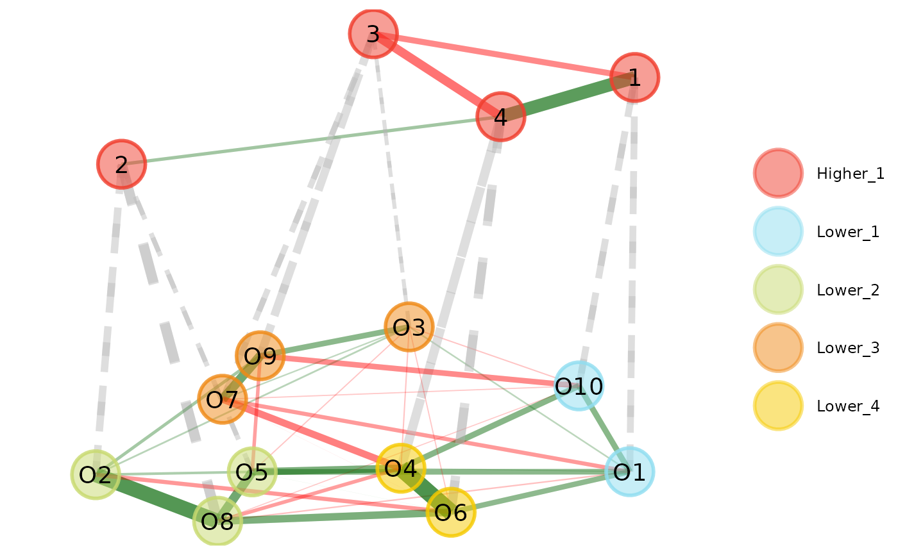

Estimates EGA using the lower-order solution of the Louvain
algorithm (cluster_louvain)to identify the lower-order
dimensions and then uses factor or network loadings to estimate factor
or network scores, which are used to estimate the higher-order dimensions
(for more details, see Jiménez et al., 2023)
Usage
hierEGA(
data,
loading.method = c("original", "revised"),
rotation = NULL,
scores = c("factor", "network"),
loading.structure = c("simple", "full"),
impute = c("mean", "median", "none"),
corr = c("auto", "cor_auto", "pearson", "spearman"),
na.data = c("pairwise", "listwise"),
model = c("BGGM", "glasso", "TMFG"),
lower.algorithm = "louvain",
higher.algorithm = c("leiden", "louvain", "walktrap"),
uni.method = c("expand", "LE", "louvain"),
plot.EGA = TRUE,
verbose = FALSE,
...
)Arguments
- data
Matrix or data frame. Should consist only of variables to be used in the analysis (does not accept correlation matrices)
- loading.method
Character (length = 1). Sets network loading calculation based on implementation described in
"original"(Christensen & Golino, 2021) or the"revised"(Christensen et al., 2024) implementation. Defaults to"revised"- rotation
Character. A rotation to use to obtain a simpler structure. For a list of rotations, see
rotationsfor options. Defaults toNULLor no rotation. By setting a rotation,scoresestimation will be based on the rotated loadings rather than unrotated loadings- scores
Character (length = 1). How should scores for the higher-order structure be estimated? Defaults to
"network"for network scores computed using thenet.scoresfunction. Set to"factor"for factor scores computed usingfa. Factors scores will be based on EFA (as in Jiménez et al., 2023)Factor scores use the number of communities from
EGA. Estimated factor loadings may not align with these communities. The plots using factor scores will have higher order factors that may not completely map on to the lower order communities. Look at$hierarchical$higher_order$lower_loadingsto determine the composition of the lower order factors.- loading.structure
Character (length = 1). Whether simple structure or the saturated loading matrix should be used when computing scores (
scores = "network"only). Defaults to"simple""simple"structure more closely mirrors traditional hierarchical factor analytic methods such as CFA;"full"structure more closely mirrors EFA methodsSimple structure is the more conservative (established) approach and is therefore the default. Treat
"full"as experimental as proper vetting and validation has not been established- impute
Character (length = 1). If there are any missing data, then imputation can be implemented. Available options:
"none"— Default. No imputation is performed"mean"— The mean value of each variable is used to replace missing data for that variable"median"— The median value of each variable is used to replace missing data for that variable
- corr
Character (length = 1). Method to compute correlations. Defaults to
"auto". Available options:"auto"— Automatically computes appropriate correlations for the data using Pearson's for continuous, polychoric for ordinal, tetrachoric for binary, and polyserial/biserial for ordinal/binary with continuous. To change the number of categories that are considered ordinal, useordinal.categories(seepolychoric.matrixfor more details)"cor_auto"— Usescor_autoto compute correlations. Arguments can be passed along to the function"pearson"— Pearson's correlation is computed for all variables regardless of categories"spearman"— Spearman's rank-order correlation is computed for all variables regardless of categories
For other similarity measures, compute them first and input them into
datawith the sample size (n)- na.data
Character (length = 1). How should missing data be handled? Defaults to
"pairwise". Available options:"pairwise"— Computes correlation for all available cases between two variables"listwise"— Computes correlation for all complete cases in the dataset
- model
Character (length = 1). Defaults to
"glasso". Available options:"BGGM"— Computes the Bayesian Gaussian Graphical Model. Set argumentordinal.categoriesto determine levels allowed for a variable to be considered ordinal. See?BGGM::estimatefor more details"glasso"— Computes the GLASSO with EBIC model selection. SeeEBICglasso.qgraphfor more details"TMFG"— Computes the TMFG method. SeeTMFGfor more details
- lower.algorithm
Character or
cluster_*function (length = 1). Defaults to the lower order"louvain"with most common consensus clustering (1000 iterations; seecommunity.consensusfor more details)Louvain with consensus clustering is strongly recommended. Using any other algorithm is considered experimental as they have not been designed to capture lower order communities
- higher.algorithm
Character or
cluster_*function (length = 1). Defaults to"louvain". Three options are listed below but all are available (seecommunity.detectionfor other options):"leiden"— Seecluster_leidenfor more details"louvain"— By default,"louvain"will implement the higher-order (order = "higher") Louvain algorithm using the consensus clustering method (seecommunity.consensusfor more information). This function will implementconsensus.method = "most_common"andconsensus.iter = 1000unless specified otherwise"walktrap"— Seecluster_walktrapfor more details
Using
algorithmwill set onlyhigher.algorithmandlower.algorithmwill default to Louvain with most common consensus clustering (1000 iterations)- uni.method
Character (length = 1). What unidimensionality method should be used? Defaults to
"louvain". Available options:"expand"— Expands the correlation matrix with four variables correlated 0.50. If number of dimension returns 2 or less in check, then the data are unidimensional; otherwise, regular EGA with no matrix expansion is used. This method was used in the Golino et al.'s (2020) Psychological Methods simulation"LE"— Applies the Leading Eigenvector algorithm (cluster_leading_eigen) on the empirical correlation matrix. If the number of dimensions is 1, then the Leading Eigenvector solution is used; otherwise, regular EGA is used. This method was used in the Christensen et al.'s (2023) Behavior Research Methods simulation"louvain"— Applies the Louvain algorithm (cluster_louvain) on the empirical correlation matrix. If the number of dimensions is 1, then the Louvain solution is used; otherwise, regular EGA is used. This method was validated Christensen's (2022) PsyArXiv simulation. Consensus clustering can be used by specifying either"consensus.method"or"consensus.iter"
- plot.EGA
Boolean. If
TRUE, returns a plot of the network and its estimated dimensions. Defaults toTRUE- verbose
Boolean (length = 1). Whether messages and (insignificant) warnings should be output. Defaults to
FALSE(silent calls). Set toTRUEto see all messages and warnings for every function call- ...
Additional arguments to be passed on to
auto.correlate,network.estimation,community.detection,community.consensus,EGA, androtations
Value
Returns a list of lists containing:
- lower_order
EGAresults for the lower order structure- higher_order
EGAresults for the higher order structure- parameters
A list containing
lower_loadingsandlower_scoresthat were used to estimate scores and the higher orderEGAresults, respectively- dim.variables
A data frame with variable names and their lower and higher order assignments
- TEFI
Generalized TEFI using
tefi- plot.hierEGA
Plot output if
plot.EGA = TRUE
References
Hierarchical EGA simulation
Jiménez, M., Abad, F. J., Garcia-Garzon, E., Golino, H., Christensen, A. P., & Garrido, L. E. (2023).
Dimensionality assessment in bifactor structures with multiple general factors: A network psychometrics approach.
Psychological Methods.
3+ level hierarchical EGA
Samo, A., Christensen, A. P., Abad, F. J., Garrido, L. E., Garcia-Garzon, E., Golino, H. & McAbee, S. T. (2023). Building the structure of personality from the bottom-up using Hierarchical Exploratory Graph Analysis.
PsyArXiv.
Conceptual implementation
Golino, H., Thiyagarajan, J. A., Sadana, R., Teles, M., Christensen, A. P., & Boker, S. M. (2020).
Investigating the broad domains of intrinsic capacity, functional ability and
environment: An exploratory graph analysis approach for improving analytical
methodologies for measuring healthy aging.
PsyArXiv.
Revised network loadings
Christensen, A. P., Golino, H., Abad, F. J., & Garrido, L. E. (2024).
Revised network loadings.
PsyArXiv.
See also
plot.EGAnet for plot usage in
Author
Marcos Jiménez <marcosjnezhquez@gmailcom>, Francisco J. Abad <fjose.abad@uam.es>, Eduardo Garcia-Garzon <egarcia@ucjc.edu>, Hudson Golino <hfg9s@virginia.edu>, Alexander P. Christensen <alexpaulchristensen@gmail.com>, and Luis Eduardo Garrido <luisgarrido@pucmm.edu.do>
Examples
# Example using network scores
opt.hier <- hierEGA(
data = optimism, scores = "network",
plot.EGA = FALSE # No plot for CRAN checks
)
#> Warning: This implementation of `hierEGA` is experimental.
#>
#> The underlying function and/or output may change until the results have been appropriately vetted and validated.
#> The default 'loading.method' has changed to "revised" in {EGAnet} version >= 2.0.7.
#>
#> For the previous default (version <= 2.0.6), use `loading.method = "original"`
# \donttest{
# Plot multilevel plot
plot(opt.hier, plot.type = "multilevel")

# Plot multilevel plot with higher order
# border color matching the corresponding
# lower order color
plot(opt.hier, color.match = TRUE)
 # Plot levels separately
plot(opt.hier, plot.type = "separate")# }
# Plot levels separately
plot(opt.hier, plot.type = "separate")# }